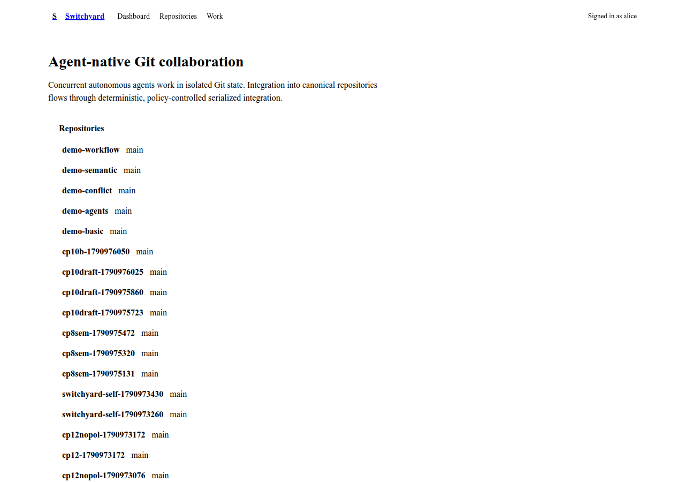
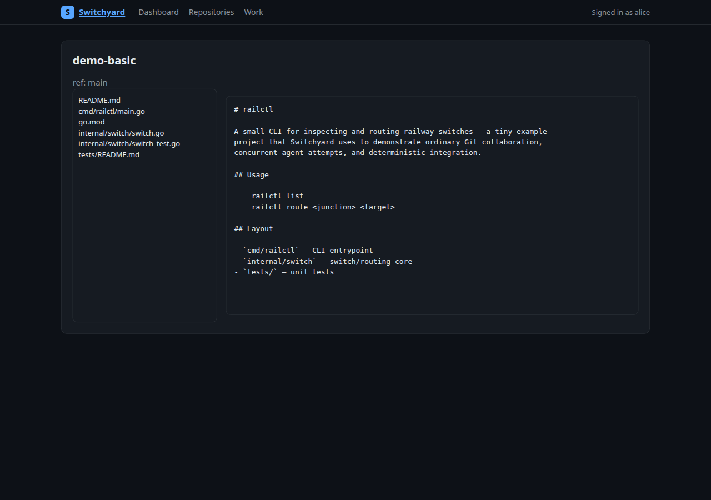
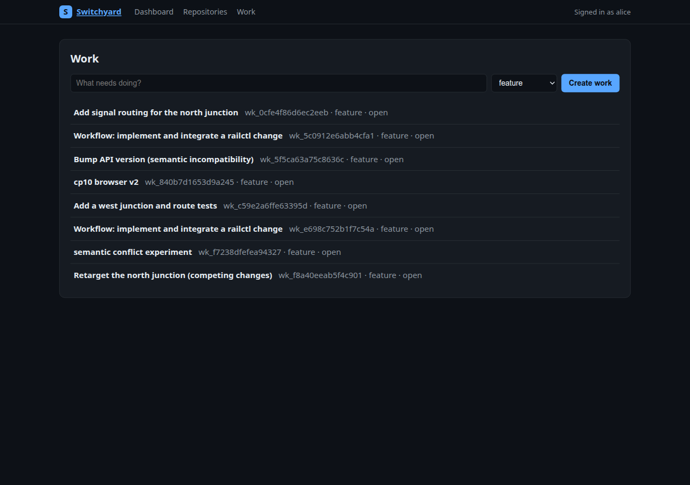
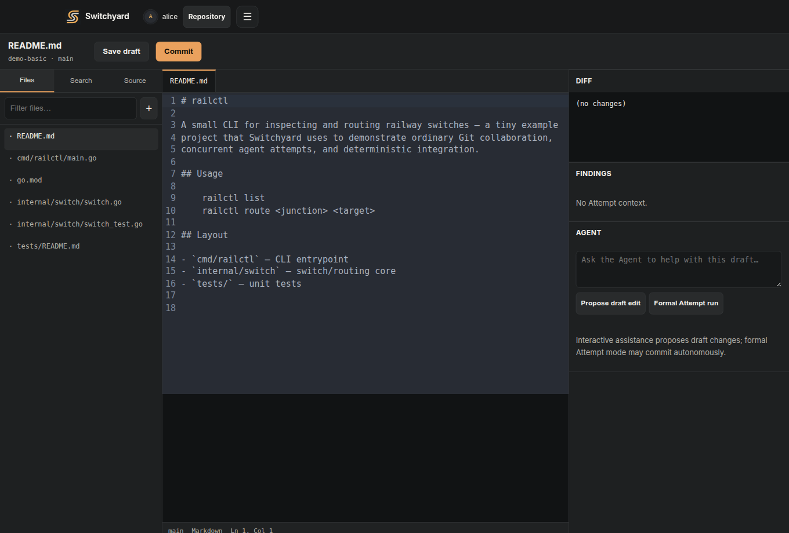

See Switchyard running.
Real screenshots from the working product, driven by curated demo repositories (ordinary Git, concurrent agent attempts, conflicts, and a durable workflow).




What the product now covers
Users & organisations
Large avatars, profile READMEs, pinned repositories, memberships, teams and settings.
Repository collaboration
Source browsing, commit history, Pull Requests, Work, access controls and repository settings.
Advanced when needed
Durable workflows, Integration Queue, Review Findings, semantic conflicts and Needs Attention.
Demo repositories
The demo environment ships five curated repositories, themed around a small
railctl project:
- demo-basic — ordinary human Git usage: history, a feature branch, an open PR.
- demo-agents — one Work item, two concurrent agent attempts, a review.
- demo-conflict — two attempts editing the same line: preview finds the textual conflict, the repair loop resolves it.
- demo-semantic — Git merges cleanly, but a repo contract is violated: Switchyard detects the semantic conflict and blocks the queue.
- demo-workflow — a durable JS workflow that implemented, checked, and integrated a change.
How to view it yourself
The application is a self-hosted control plane currently bound to
127.0.0.1:8080 on the CP0 development host. The cleanest way to
see it today is an SSH tunnel:
ssh -L 8080:127.0.0.1:8080 switchyard-cp0
# then open http://127.0.0.1:8080/There is not yet a public demo URL. A safe public staging deployment is a planned next step (see Status), rather than exposing an administrative service directly.